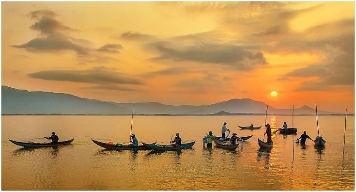
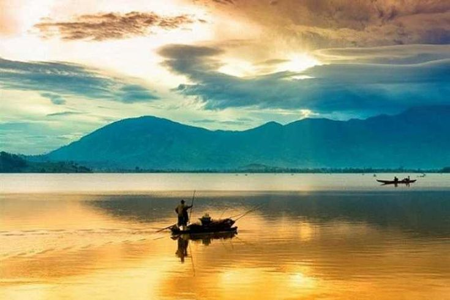

Hồ Lắk, viên ngọc xanh của Tây Nguyên, là điểm đến lý tưởng cho những ai đam mê thiên nhiên và khám phá văn hóa bản địa.
Với diện tích gần 6,2km² và cao hơn 500m so với mực nước biển, hồ nước ngọt lớn nhất khu vực này được nuôi dưỡng bởi dòng sông Krông Ana,
mang đến làn nước trong xanh và yên bình.Bao quanh hồ là rừng nguyên sinh hùng vĩ, tạo nên bức tranh thiên nhiên thơ mộng, như một thước phim sống động
của đất trời Tây Nguyên. Không chỉ có cảnh sắc tự nhiên làm say lòng người, Hồ Lắk còn là nơi hội tụ bản sắc văn hóa đậm đà của cộng đồng người M’nông.
Những buôn làng truyền thống như Jun, M’Liêng hay Lê, nơi vẫn lưu giữ các giá trị văn hóa nguyên bản, đưa bạn về với nhịp sống mộc mạc, chân thật.
Tại đây, bạn có thể khám phá kiến trúc nhà dài độc đáo, tham dự các lễ hội dân gian rộn ràng hay đơn giản là lắng nghe câu chuyện về núi rừng qua lời kể của người dân địa phương.